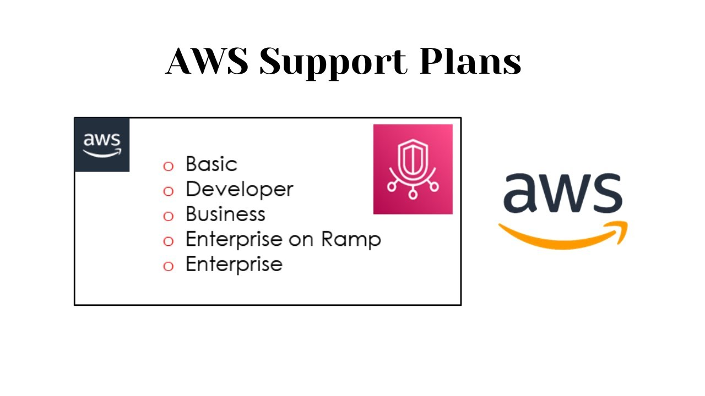

Beschreibung
AWS Basic Support:
AWS-Kunden haben automatisch rund um die Uhr Zugang zu grundlegenden Support, der Einzelantworten auf Fragen zu Konten und Abrechnung, Support-Foren, Service-Statusüberprüfungen sowie Dokumentation und Best Practices umfasst. AWS Basic Support bietet ebenfalls 24/7 Kundenservice, ergänzt durch Dokumentation, Trusted Advisor mit 7 Kernchecks und ein persönliches Gesundheits-Dashboard für Ressourcenwarnungen. Dieser Support-Plan ist darauf ausgerichtet, einen soliden Einstieg in die AWS-Welt zu ermöglichen.
Kernleistungen von AWS Basic Support:
- Rund um die Uhr Kundenservice für allgemeine Anfragen und Probleme
- Dokumentation für Selbsthilfe und Ressourcen
- Trusted Advisor mit grundlegenden Best Practices und Kernchecks
- Persönliches Gesundheits-Dashboard für Ressourcenwarnungen
Es ist wichtig zu beachten, dass der AWS Basic Support im Vergleich zum Business Support einen eingeschränkteren Umfang hat und speziell für Kunden konzipiert ist, die grundlegende Unterstützung benötigen. Für den Basic Support-Plan gilt eine Reaktionszeit von 4 Stunden für systembezogene Fragen und eine Reaktionszeit von 1 Stunde für geschäftskritische Situationen.
Schlüsselwörter
Schlüsselworte bzw. Schlagworte sollen uns dabei helfen, einen Service leichter zu erkennen, wenn es um Prüfungsfragen geht. Ließ dir die Fragen richtig durch und achte auf folgende Schlüsselworte. Sie können dir bei der Beantwortung der Fragen helfen.
- Kostenloser Basis-Support
- Automatisch in jedes AWS-Konto integriert
- Grundlegende technische Unterstützung
- Zugang zur AWS Knowledge Base
- Dokumentation und Selbsthilferessourcen
- Community-Foren und Diskussionsgruppen
- Begrenzte Reaktionszeit
- Allgemeine Fragen zur AWS-Nutzung
- Standard-Servicelevelvereinbarungen (SLAs)
- Beschränkte Zugriffsberechtigung auf AWS-Ressourcen
Grafische Erklärung / Wir fassen unter "Support" nochmal alle Support Pläne zusammen. Dort kannst du einen Bildvergleich der Supportkosten finden.
Prüfung Fragen
- Welche Unterstützung bietet der Basic Support Plan von AWS in Bezug auf die Reaktionszeit?
- Was ist eine der Hauptunterschiede zwischen dem Basic Support Plan und höheren Support-Plänen wie Business oder Enterprise?
- Welche Art von Kunden profitiert am meisten vom Basic Support Plan von AWS?